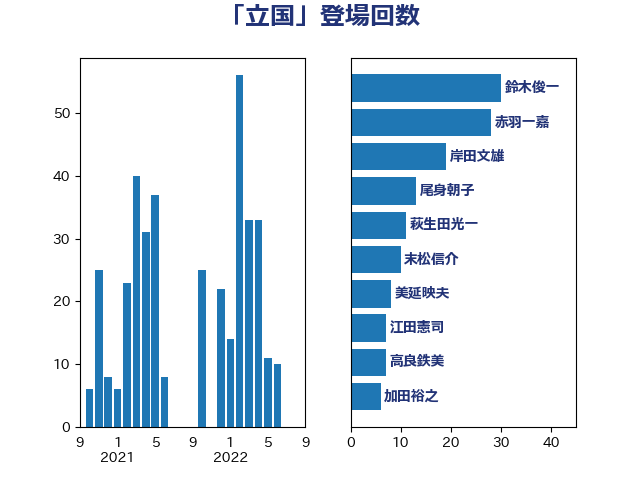

単語「立国」

| 鈴木俊一 | 自由民主党 | 30 回 |
| 赤羽一嘉 | 公明党 | 28 回 |
| 岸田文雄 | 自由民主党 | 19 回 |
| 尾身朝子 | 自由民主党 | 13 回 |
| 萩生田光一 | 自由民主党 | 11 回 |
| 末松信介 | 自由民主党 | 10 回 |
| 美延映夫 | 日本維新の会 | 8 回 |
| 江田憲司 | 立憲民主党 | 7 回 |
| 高良鉄美 | 無所属 | 7 回 |
| 加田裕之 | 自由民主党 | 6 回 |
| 池田佳隆 | 自由民主党 | 6 回 |
| 菅義偉 | 自由民主党 | 6 回 |
| 鶴保庸介 | 自由民主党 | 6 回 |
| 麻生太郎 | 自由民主党 | 6 回 |
| 斉藤鉄夫 | 公明党 | 5 回 |
| 丹羽秀樹 | 自由民主党 | 4 回 |
| 吉良州司 | 無所属 | 4 回 |
| 城井崇 | 立憲民主党 | 4 回 |
| 小林鷹之 | 自由民主党 | 4 回 |
| 有村治子 | 自由民主党 | 4 回 |
| 枝野幸男 | 立憲民主党 | 4 回 |
| 田村智子 | 日本共産党 | 4 回 |
| 世耕弘成 | 自由民主党 | 3 回 |
| 井上信治 | 自由民主党 | 3 回 |
| 井上英孝 | 日本維新の会 | 3 回 |
| 山井和則 | 立憲民主党 | 3 回 |
| 山谷えり子 | 自由民主党 | 3 回 |
| 田中英之 | 自由民主党 | 3 回 |
| 藤巻健太 | 日本維新の会 | 3 回 |
| 西岡秀子 | 国民民主党 | 3 回 |
| 鈴木敦 | 国民民主党 | 3 回 |
| ながえ孝子 | 無所属 | 2 回 |
| 三木圭恵 | 日本維新の会 | 2 回 |
| 上野通子 | 自由民主党 | 2 回 |
| 串田誠一 | 日本維新の会 | 2 回 |
| 伊藤孝恵 | 国民民主党 | 2 回 |
| 伴野豊 | 立憲民主党 | 2 回 |
| 古川元久 | 国民民主党 | 2 回 |
| 安達澄 | 無所属 | 2 回 |
| 室井邦彦 | 日本維新の会 | 2 回 |
| 小沼巧 | 立憲民主党 | 2 回 |
| 山口那津男 | 公明党 | 2 回 |
| 牧原秀樹 | 自由民主党 | 2 回 |
| 石原正敬 | 自由民主党 | 2 回 |
| 石垣のりこ | 立憲民主党 | 2 回 |
| 茂木敏充 | 自由民主党 | 2 回 |
| 荒井優 | 立憲民主党 | 2 回 |
| 輿水恵一 | 公明党 | 2 回 |
| 遠藤利明 | 自由民主党 | 2 回 |
| 野上浩太郎 | 自由民主党 | 2 回 |
| 須藤元気 | 無所属 | 2 回 |
| こやり隆史 | 自由民主党 | 1 回 |
| 三木亨 | 自由民主党 | 1 回 |
| 中川宏昌 | 公明党 | 1 回 |
| 仁木博文 | 無所属 | 1 回 |
| 佐々木紀 | 自由民主党 | 1 回 |
| 吉川ゆうみ | 自由民主党 | 1 回 |
| 吉田統彦 | 立憲民主党 | 1 回 |
| 国光あやの | 自由民主党 | 1 回 |
| 堀井巌 | 自由民主党 | 1 回 |
| 堂故茂 | 自由民主党 | 1 回 |
| 大家敏志 | 自由民主党 | 1 回 |
| 大野泰正 | 自由民主党 | 1 回 |
| 安江伸夫 | 公明党 | 1 回 |
| 宮口治子 | 立憲民主党 | 1 回 |
| 小宮山泰子 | 立憲民主党 | 1 回 |
| 小寺裕雄 | 自由民主党 | 1 回 |
| 小泉進次郎 | 自由民主党 | 1 回 |
| 岡本三成 | 公明党 | 1 回 |
| 岬麻紀 | 日本維新の会 | 1 回 |
| 市村浩一郎 | 日本維新の会 | 1 回 |
| 日下正喜 | 公明党 | 1 回 |
| 末松義規 | 立憲民主党 | 1 回 |
| 東国幹 | 自由民主党 | 1 回 |
| 松川るい | 自由民主党 | 1 回 |
| 松木けんこう | 立憲民主党 | 1 回 |
| 松沢成文 | 日本維新の会 | 1 回 |
| 柴山昌彦 | 自由民主党 | 1 回 |
| 柴田巧 | 日本維新の会 | 1 回 |
| 横山信一 | 公明党 | 1 回 |
| 櫻井周 | 立憲民主党 | 1 回 |
| 江島潔 | 自由民主党 | 1 回 |
| 浅川義治 | 日本維新の会 | 1 回 |
| 浅田均 | 日本維新の会 | 1 回 |
| 渡辺猛之 | 自由民主党 | 1 回 |
| 漆間譲司 | 日本維新の会 | 1 回 |
| 牧山ひろえ | 立憲民主党 | 1 回 |
| 玉木雄一郎 | 国民民主党 | 1 回 |
| 甘利明 | 自由民主党 | 1 回 |
| 田嶋要 | 立憲民主党 | 1 回 |
| 田村憲久 | 自由民主党 | 1 回 |
| 福田昭夫 | 立憲民主党 | 1 回 |
| 穀田恵二 | 日本共産党 | 1 回 |
| 空本誠喜 | 日本維新の会 | 1 回 |
| 笠井亮 | 日本共産党 | 1 回 |
| 笹川博義 | 自由民主党 | 1 回 |
| 藤田文武 | 日本維新の会 | 1 回 |
| 西銘恒三郎 | 自由民主党 | 1 回 |
| 谷合正明 | 公明党 | 1 回 |
| 赤木正幸 | 日本維新の会 | 1 回 |
| 足立敏之 | 自由民主党 | 1 回 |
| 鈴木憲和 | 自由民主党 | 1 回 |
| 長坂康正 | 自由民主党 | 1 回 |
| 長浜博行 | 無所属 | 1 回 |
| 関芳弘 | 自由民主党 | 1 回 |
| 阿部司 | 日本維新の会 | 1 回 |
| 青山大人 | 立憲民主党 | 1 回 |
| 青山繁晴 | 自由民主党 | 1 回 |
| 青柳陽一郎 | 立憲民主党 | 1 回 |
| 音喜多駿 | 日本維新の会 | 1 回 |
| 馬場伸幸 | 日本維新の会 | 1 回 |
| 高村正大 | 自由民主党 | 1 回 |
| 高橋千鶴子 | 日本共産党 | 1 回 |
| 鳩山二郎 | 自由民主党 | 1 回 |